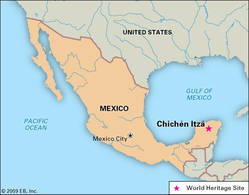
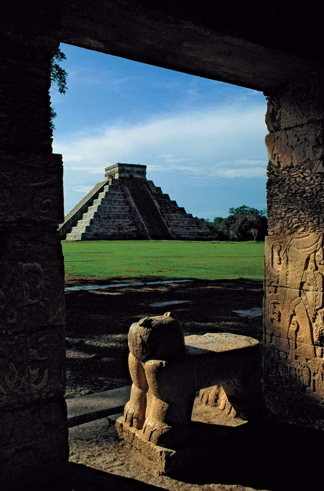
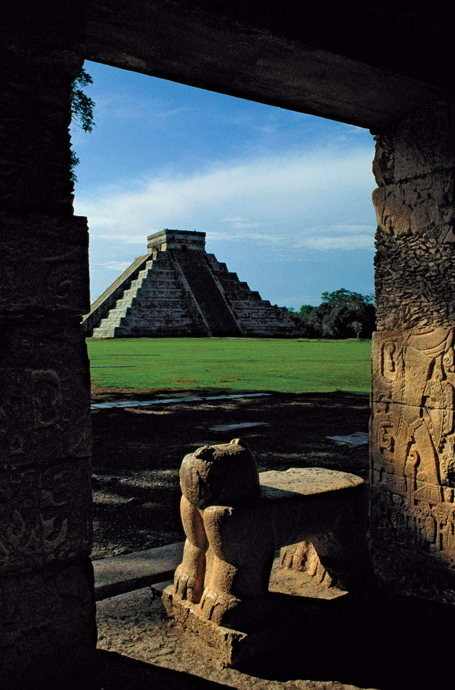
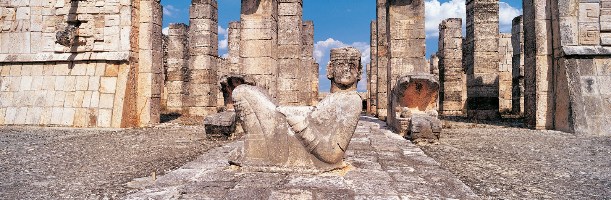
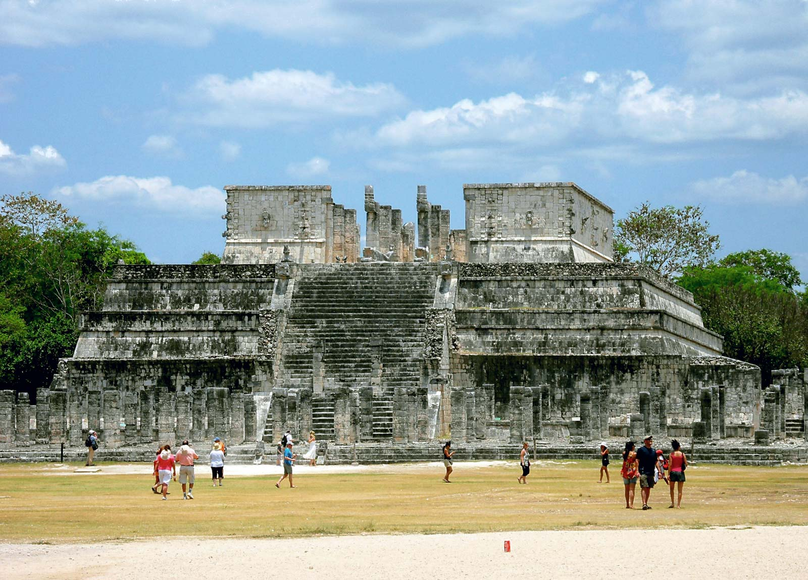

Introduction
Chichen Itza was a Mayan city on the Yucatan Peninsula in Mexico. Although it’s an important tourist attraction, Chichen Itza also remains an active archeological site. New discoveries are still being unearthed in the area, providing even more insight into the culture and accomplishments of the Mayan people, who ruled much of present-day Mexico and Central America prior to the arrival of European colonists. Chichen Itza was named a UNESCO World Heritage Site in 1988 and, in 2007, it was voted in a global survey as one of the New Seven Wonders of the World

Location
Chichen Itza is located about 120 miles from the modern-day resort town of Cancun, on Mexico’s Yucatan Peninsula. The name Chichen Itza is a Mayan language term for “at the mouth of the well of the Itza.” The Itza were an ethnic group of Mayans who had risen to power in the northern part of the Yucatan peninsula, where the city is located. The well in the name refers to a number of underground rivers that run beneath the region and likely served as the source of water for the city. This easy access to water made the location perfect for a city the size of Chichen Itza.
When Was Chichen Itza Built?
Historic accounts differ as to when Chichen Itza was built and ultimately developed into a center of political and economic power. Some accounts place the establishment of the city in the early 400s A.D., while others suggest construction started a few years later, in the middle part of the fifth century. What isn’t up for debate is that Chichen Itza was a significant center of political and economic activity in the Mayan culture by roughly 600 A.D.
By then, it was already one of the largest cities in the Mayan world, covering nearly two square miles with densely packed commercial, residential and other structures made of stone. Chichen Itza even had its own “suburbs,” with smaller homes occupying the outskirts of the city.
El Castillo
All of the buildings of Chichen Itza were linked by a network of nearly 100 “sacbeob,” or paved roadways and sidewalks—which was significant, given that many European cities did not yet feature paved streets at the time. In addition, archeologists believe the Mayans painted many of the buildings in bright colors, including reds, greens and blues. Today, though, the remains of the city retain the pale gray colors of the original stone.
 

Chichen Itza as a Capital
By the ninth century, Chichen Itza was a de facto regional capital, with its rulers controlling much of the central and northern Yucatan peninsula.
Via its port at Isla Cerritos on the northern coast, Chichen Itza became an important commercial center, trading in goods—including gold and other treasures—with other cities throughout the Americas.
At its height, it is believed that as many as 50,000 people lived in the city. This population may have also been fairly diverse, at least by standards of the time, with residents immigrating to the city from beyond the Yucatan, including from present-day Central America.
The Decline of Chichen Itza
Although the fall of Mayan civilization is widely attributed to the arrival of Christopher Columbus in 1492, and the European colonialists that followed the famous explorer, Chichen Itza may well have lost its place as an important city in the region long before then. Indeed, historians believe that many of the political and economic activities of the city had shifted to Mayapan, a newer community built to the south and west of Chichen Itza, by the mid-1200s.
There is some evidence that Chichen Itza may have been raided and looted at this time, although that remains up for debate. Still, when Spanish conquistadors arrived in 1526, there was a thriving community living in and around the city. As a result, it was only natural that, for a time, the Spanish set up a temporary capital there. They later used the site as a headquarters for cattle ranching activities.
Chichen Itza Today
Long abandoned by the Spanish, and then by the newly formed country of Mexico, Chichen Itza became a significant architectural site in the mid-1800s. It remains so today.
A number of important structures of the original city remain standing, some thanks to restoration efforts on the part of the Mexican government. Among them:
El Castillo:Also known as the Temdivle of Kukulkan, named for a Mayan deity that appears as a feathered serpent. This pyramid-shaped structure stands close to 100 feet high.
The Great Ball Court:Just to the northwest of El Castillo,
this structure was used for sport—primarily a team game using a ball.
The North Temple:Also called the Temple of the Bearded Man, this small building is adjacent to the Great Ball Court and features a carving on its inner walls, with the central figure of a man with a carving under his chin that resembles facial hair.
The Steam Bath: This structure features a water bath and steam chamber
operated by using heated stones.
Sacbe Number One:One of the paved streets of the city that extends nearly 900 feet.
Temple of the Warriors: Another large, stepped pyramid.
Group of a Thousand Columns: A series of exposed columns that are
believed to have supported a large roof system.
El Mercado: A square structure at the southern end of the Temple of the Warriors that archeologists believe served as the city’s marketplace.
El Osario: Another step-pyramid structure with a temple at its peak.
Today, some 2 million tourists visit Chichen Itza annually to explore its architectural wonders and gain further insight into Mayan history and culture. However, archeologists are still at work on the site.